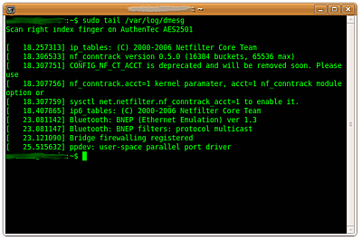

fprint
Dieser Artikel wurde für die folgenden Ubuntu-Versionen getestet:
Ubuntu 14.04 Trusty Tahr
Zum Verständnis dieses Artikels sind folgende Seiten hilfreich:
fprint  ist ein Projekt, das die Authentisierung mittels Fingerabdruck am PC ermöglicht. Es setzt sich zusammen aus einer Anwendung, die die Verwaltung der Fingerabdrücke vornimmt und einem PAM-Modul, welches sich in die Authentisierungs-Infrastruktur des Rechners einbinden lässt. Mögliche Alternativen sind ThinkFinger und Fingerprint-GUI.
ist ein Projekt, das die Authentisierung mittels Fingerabdruck am PC ermöglicht. Es setzt sich zusammen aus einer Anwendung, die die Verwaltung der Fingerabdrücke vornimmt und einem PAM-Modul, welches sich in die Authentisierungs-Infrastruktur des Rechners einbinden lässt. Mögliche Alternativen sind ThinkFinger und Fingerprint-GUI.
Installation¶
fprint kann aus den Standard-Paketquellen installiert [1] werden:
fprintd (universe)
libfprint0 (universe)
libpam-fprintd (universe)
fprint-demo (universe, optional, Grafische Oberfläche)
 mit apturl
mit apturl
Paketliste zum Kopieren:
sudo apt-get install fprintd libfprint0 libpam-fprintd fprint-demo
sudo aptitude install fprintd libfprint0 libpam-fprintd fprint-demo
Weitere Konfiguration¶
Achtung!
Änderungen am Login-Mechanismus können dazu führen, dass man sich nicht mehr am System anmelden kann. Gegebenenfalls müssen die vorgenommenen Änderungen an Konfigurationsdateien mittels einer Live-CD oder Recovery-Modus rückgängig gemacht werden.
Um das PAM-Modul zur aktivieren, editiert man mit Root-Rechten[2] die /etc/pam.d/common-auth-Datei[3] und trägt die folgende Zeile ein - sie muss als erste Zeile im Primary-Block eingesetzt werden:
auth sufficient pam_fprint.so
Anwendung¶
Kommandozeile¶
Unter Trusty wird ein Fingerabdruck mit folgendem Befehl[4] eingescannt und einem Benutzer zugeordnet:
fprintd-enroll -f FINGER BENUTZERNAME
FINGER gibt an, welcher Finger eingelesen wird, mögliche Werte sind:
left-thumb(linker Daumen)left-index-finger(linker Zeigefinger)left-middle-finger(linker Mittelfinger)left-ring-finger(linker Ringfinger)left-little-finger(linker kleiner Finger)right-thumb(rechter Daumen)right-index-finger(rechter Zeigefinger)right-middle-finger(rechter Mittelfinger)right-ring-finger(rechter Ringfinger)right-little-finger(rechter kleiner Finger)
BENUTZERNNAME gibt den Benutzer an, für den der Fingerabdruck eingescannt wird.
Ab sofort steht der eingescannte Finger für die Anmeldung am System, sowie für die Identifikation bei der Nutzung von sudo zur Verfügung.
Grafische Oberfläche¶
Unter Trusty führt die Benutzung von fprint-demo nicht zu einer Verknüpfung mit dem Benutzernamen und die gewünschte Funktionalität steht nicht zur Verfügung. Das Einlesen des Fingerabdruckes ist nur über die Kommandozeile möglich.
Abdruck einlesen¶
Im Karteireiter "Enroll" wählt man den Finger, dessen Abdruck man einlesen möchte und  -klickt auf den Knopf "Enroll". Es öffnet sich ein Dialog-Fenster, das zum Scannen des gewählten Fingers mittels des Fingerabdrucksensors auffordert. Nach dem Vorgang informiert der Dialog, ob der Scan erfolgreich verlaufen ist und zeigt, sofern das Gerät dies unterstützt, das eingelesene Bild des Fingerabdrucks an.
-klickt auf den Knopf "Enroll". Es öffnet sich ein Dialog-Fenster, das zum Scannen des gewählten Fingers mittels des Fingerabdrucksensors auffordert. Nach dem Vorgang informiert der Dialog, ob der Scan erfolgreich verlaufen ist und zeigt, sofern das Gerät dies unterstützt, das eingelesene Bild des Fingerabdrucks an.
Abdruck löschen¶
Im Karteireiter "Enroll" lassen sich bereits erfasste Abdrücke über den Knopf "Löschen" wieder entfernen. Sie werden dann für eine Authentisierung nicht mehr herangezogen.
Abdruck überprüfen¶
Im Karteireiter "Verify" kann die Genauigkeit eines eingelesenen Abdrucks überprüft werden. Hierzu wählt man den zu prüfenden Abdruck aus und -klickt auf "Verify". Es öffnet sich ein Dialog, der zum Scannen des Fingers auffordert. Das eingescannte Abbild wird im Fenster angezeigt zusammen mit einer Auswertung, wie viele Minutien gefunden wurden. Das Abbild kann hier auch als Bild gespeichert werden.
Unter "Image control" kann die Art der Anzeige des eingelesenen Fingerabdrucks eingestellt werden. Es kann zwischen dem direkt eingelesenen ("Normal") und dem für die Erkennung aufbereiteten Bild ("Binarized") ausgewählt werden, zudem kann fprint-demo die erkannten Minutien ("Show minutiae") als rote Punkte darstellen.
Abdruck identifizieren¶
Im Karteireiter "Identify" können besonders vergessliche Menschen vom Programm ermitteln lassen, welcher Finger eingescannt wurde, wenn zuvor Abbilder von allen Fingern angelegt wurde.
Dieser Punkt ist wohl eher als Spielerei anzusehen.
Image Capture¶
Diese Funktion wurde noch nicht implementiert.
Auswirkung¶
 Das System fragt nun jedes Mal, wenn ein Kennwort benötigt wird, automatisch den Fingerabdruck-Scanner ab.
Auf der Konsole (z.B. mit
sudo) erscheint explizit eine entsprechende Abfrage, ebenso im Dialog zum Entsperren des Bildschirms. GDM und gksudo scheinen nicht über eine Aufforderung zum Einlesen eines Fingerabdrucks zu verfügen. GDM bleibt an Stelle dessen bei der Eingabe des Benutzernamens stehen und springt erst bei einem nicht erkannten Fingerabdruck zur Kennwort-Eingabe.Bei gksudo (z.B. beim Start von Synaptic) ist nicht ersichtlich, dass es auf eine Eingabe wartet, da erst nach einem falschen oder nicht erkannten Fingerabdruck der Dialog zur Eingabe des Kennwortes erscheint.
Der GNOME-Schlüsselbund wird nicht automatisch entsperrt, hierfür wir eine separate Kennwort-Abfrage eingeblendet.
Hinweis:
Liegen mehrere Fingerabdrücke vor, so wird ein bestimmter Abdruck zur Authentifizierung angefordert. Wenn der Anmeldemanager keine Aufforderung anzeigt, so sollten alle Fingerabdrücke bis auf einen entfernt werden.
Getestete Hardware¶
Eine vollständige Liste unterstützter Hardware findet man auf der Projektseite von libfprint. Dort ist auch eine Liste mit nicht unterstützter Hardware zu finden.
- Erstellt mit Inyoka
-
 2004 – 2017 ubuntuusers.de • Einige Rechte vorbehalten
2004 – 2017 ubuntuusers.de • Einige Rechte vorbehalten
Lizenz • Kontakt • Datenschutz • Impressum • Serverstatus -
Serverhousing gespendet von